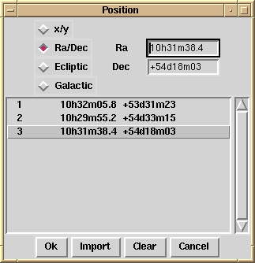

|  |
Isys maintains a current position (initially the centre of the image) and optionally a current list of positions. The list can be imported from a file in simple text format, Cursa Short Text List format, or PSS output format. It can also be created internally as a result of source searching or a catalogue search. The current position can be set by entering values in the chosen coordinates in the entry boxes, or by clicking one of the positions in the list box. |